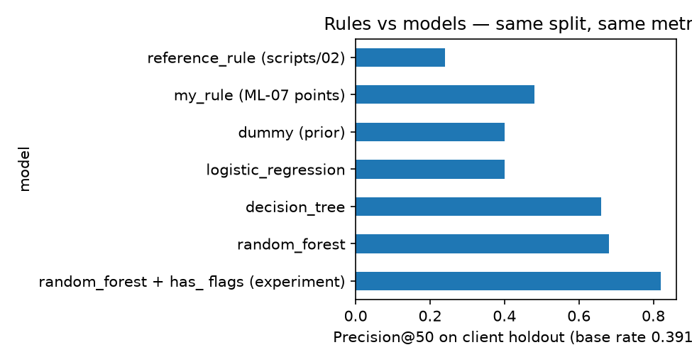
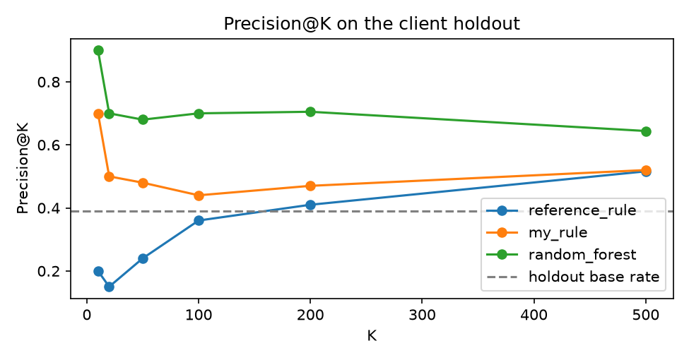
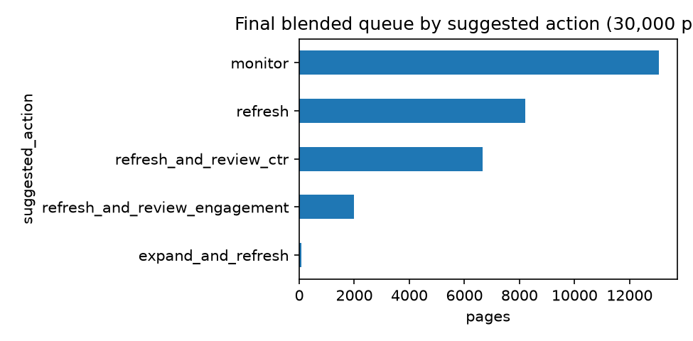
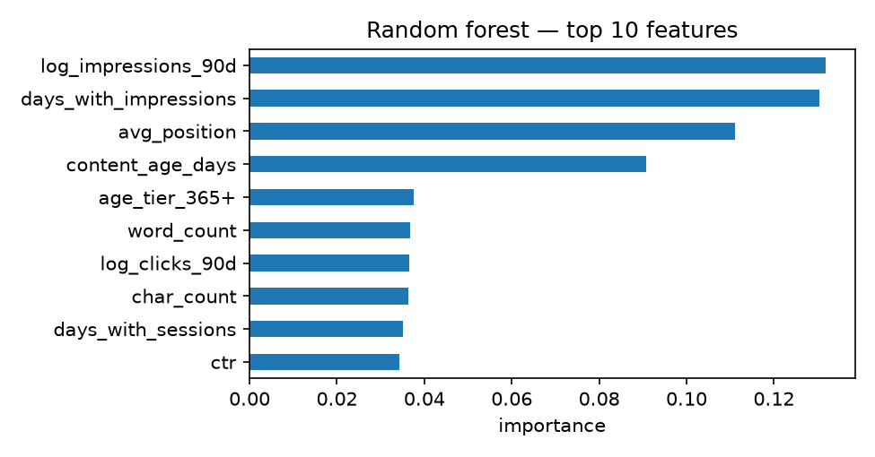

Given a portfolio of existing pages and a reviewer who can look at about 50 pages a week, which pages should be reviewed first for a content refresh — and can a model rank them better than the transparent rules a human would write? I worked on the starter release of the FlyRank ML Internship dataset: 30,000 pseudonymized pages from 32 clients, with trailing-90-day search and engagement metrics and an observed decline label on 54.2% of pages. I compared two hand-written rules against three learned models under a strict client-holdout design (seed 42), after auditing the data contract, the label's leakage paths, and the portfolio's popular beliefs. On clients the model had never seen, a random forest's top 50 contained about 2.8× as many observed-declining pages as the reference rule's top 50 (Precision@50 0.68 vs 0.24, holdout base rate 0.391). The output is a ranked review queue with plain-language reason codes and a weekly playbook — decision-support for human reviewers, not an automated publishing decision and not a causal claim about what a refresh will do.
The decision: the weekly ordering of the content-refresh review queue. A FlyRank editor works through existing pages that may need a refresh; the queue decides which pages get human attention first.
refresh,
refresh_and_review_ctr, refresh_and_review_engagement, expand_and_refresh,
monitor) and reason codes in plain words.Why data/ML helps at all: the scale rules out manual triage. 16,262 of 30,000 pages (54.2%) carry the observed decline label, and those pages hold 51.3% of all 90-day impressions — at 50 reviews a week, portfolio order would take ~325 weeks to reach them all. The obvious shortcut fails as well: "just review stale pages" misses the problem, because staleness alone does not separate declining pages (my signal audit, ML-06, found the "older pages decline" belief comes out OPPOSITE in this data). What remains is a ranking problem, and ranking quality is measurable — that is the whole shape of the lane.
Data used: the starter release that ships with this repo,
data/raw/content_refresh_anonymized.csv (30,000 rows × 44 columns), plus the pipeline's
prepared feature vector derived from it. I did not use the gated warehouse release; the
starter slice is the dataset every weekly assignment shares, which keeps ML-02…ML-10
numbers comparable.
Deliberately excluded:
trend_direction and trend_pct — they define the label (Section 4), so using them
as features would be reading the answer key. ML-05 demonstrated the trap: adding
trend_pct produces a perfect, meaningless AUC of 1.000.content_id / client_id as features — pseudonymous IDs, used for grouping, joining
and splitting only (DATA_USE.md).Leakage risks considered: label-derived fields (above); split leakage (a random row split lets the model memorise which client a page belongs to — ML-09 measured the inflation: P@50 0.90 random vs 0.68 grouped); and window leakage (all features are trailing-90-day aggregates from the same snapshot as the label — stated as a limitation in Section 5, since this file has no calendar dates to build a past→future split from).
Missingness: patterned, not random — it follows content_type (ML-04). The pipeline
adds availability flags (has_clicks, has_ai_sessions, measurable_opportunity)
instead of blind-filling. avg_position = 0 means no data (1,205 pages); rate columns
are percentages on a 0–100 scale.
Confirmation: no client names, domains, URLs, page titles or raw queries exist in
this release or anywhere in work/; every ID in my notebooks is a shipped pseudonym.
Two transparent baselines, both scored on the same client holdout as the model (Section 5):
scripts/02_baseline_score.py) — the pipeline's hand-built
refresh score blending visibility, freshness risk, position opportunity and depth
gap, with reason codes. It is the fair comparison because it is what a competent
analyst ships without ML, and it is the queue the pipeline itself blends against.
Holdout: P@20 0.15 · P@50 0.24 · P@100 0.36 · ROC AUC 0.627 · AP 0.468.A dummy classifier (prior probabilities) sits under both as the floor: P@K ≈ the holdout base rate (0.391), AUC 0.500, exactly as it must.
Target, in one sentence: is_declining_label — 1 exactly when a page's observed
trailing-window trend direction is "down", 0 otherwise.
Method: classifier probabilities used as a ranking score, evaluated with Precision@K — the deliverable is an ordered queue, so the metric describes an ordered queue. Models, in the order tried (the pipeline's own learners, so the comparison stays clean): dummy (prior) → logistic regression (scaled, class-weighted) → decision tree (depth 5) → random forest (200 trees, depth 10, class-weighted). One experiment on top: a second forest adding the three availability flags from step 01 that the reference feature list leaves out.
Features (exact list): 18 numeric — search_volume, competition, cpc,
word_count, char_count, log_impressions_90d, log_clicks_90d, log_sessions_90d,
log_ai_sessions_90d, days_with_impressions, days_with_sessions, content_age_days,
days_since_last_update, ctr, avg_position, engagement_rate, scroll_rate,
ai_traffic_pct — plus 8 categoricals one-hot encoded: competition_level,
content_type, main_intent, age_tier, freshness_tier, word_count_tier,
impression_tier, position_tier. Left out on purpose: the label's parents
(trend_direction, trend_pct), both IDs, and every product flag (not shipped).
Why this fits the lane: the question is a ranking question over observable signals with an observed binary label; tree ensembles handle the mixed scales and interactions (freshness × visibility effects flip direction between bands — ML-02) without feature engineering heroics, and the depth-5 tree remains as the printable version a reviewer can read end-to-end.
Split: client holdout, seed 42 — the 32 clients are shuffled once, ~20% held out: 26 clients train (27,675 pages), 6 clients test (2,325 pages), zero client overlap (asserted in code). Grouped, because pages from one client share site-level character; the deployment question is whether the ranking works on a portfolio the model has not seen. Not time-aware, because the file has no calendar dates — I say so rather than faking a time axis. Metrics: Precision@20/50/100, ROC AUC, average precision. Base rates, always next to the metrics: full data 0.542 · train 0.555 · holdout 0.391 (the six held-out clients decline less, so P@K on this slice starts from a lower floor — random ordering scores ≈0.39).
| Model | P@20 | P@50 | P@100 | ROC AUC | Avg precision |
|---|---|---|---|---|---|
| reference rule (scripts/02) | 0.15 | 0.24 | 0.36 | 0.627 | 0.468 |
| my points rule (ML-07) | 0.50 | 0.48 | 0.44 | 0.573 | 0.440 |
| dummy (prior) | 0.30 | 0.40 | 0.37 | 0.500 | 0.391 |
| logistic regression | 0.35 | 0.40 | 0.44 | 0.700 | 0.522 |
| decision tree | 0.65 | 0.66 | 0.68 | 0.742 | 0.575 |
| random forest | 0.70 | 0.68 | 0.70 | 0.747 | 0.610 |
| random forest + has_ flags (experiment) | 0.80 | 0.84 | 0.79 | 0.752 | 0.630 |
Receipts: work/outputs/w05_model_metrics.json (ML-08) and
work/outputs/w06_validation_audit.json (ML-09). The capstone notebook independently
recomputed this table in one run: every row matches the receipts exactly except the
flags experiment (P@50 0.82 on the rerun vs 0.84 in ML-08) — a one-page boundary
difference in the variant whose top 50 is a single client's pages; no conclusion moves.
Error analysis (ML-08), in brief. False positives — ranked high, not declining — are substantial pages that held up: real length (2,200–4,500 words), middling positions, indistinguishable from declining pages on every observable available. I read them as the honest ceiling of this feature set. False negatives — declining, ranked last — are near-invisible pages (1–3 impressions, position unmeasured): a measurement floor, not evidence of health. Slices: keyword articles P@50 0.68 against a 0.524 slice base rate; feedly articles harder, P@50 0.52 against a 0.201 base rate.
What this work cannot claim (also Section 5 of the capstone notebook): one cross-sectional snapshot — association and ranking quality were measured, refresh impact was not; no causal claim is available without an experiment. Metrics are slice-dependent (base rates above). The forest's P@50 is library-version sensitive (0.68–0.74 per the GUIDE FAQ); the stable claim is the ~3× lift over the reference rule, not the third decimal.
What the model found: it leans on visibility and age — log_impressions_90d,
days_with_impressions, avg_position, content_age_days lead the importances
(work/figures/capstone_feature_importance.png). The model found the reviewer's
intuition, weighted better: pages with an audience that is slipping, in positions worth
protecting. No feature is suspiciously perfect, and no ID is in the matrix.
What the audits found (the findings under the model):
avg_position = 0 on 1,205 pages;
position_tier half unmeasured) — position-based reason codes deserve a human
glance.Surprises and negative results, kept on the record: logistic regression (P@50 0.40)
did not beat my hand rule (0.48) — "learned" does not automatically beat
"hand-written". The flags variant's headline-grabbing 0.84 comes with 49 of its top 50
from a single held-out client (ML-09), so it is reported as directional, not as the
result. And the perfect score exists in this project exactly once — the deliberate
leak control (AUC 1.000 with trend_pct) — where it belongs: as a warning.
Ranked — what a FlyRank editor does with this tomorrow (full playbook: ML-10,
work/notebooks/w07_action_playbook.ipynb):
refresh_and_review_ctr (6,655 pages)
gets snippet/intent review before deep rewrites; expand_and_refresh (82) gets
depth work; refresh (8,207) gets a general refresh review; monitor (13,069)
gets no edits.Confidence and limits, explicitly: I am confident in the ordering claim on portfolios similar to these 32 clients — it survived a grouped holdout, two baselines and a leakage audit. I make no claim that acting on the queue improves any page's trajectory; that needs an experiment this dataset cannot run. Treat the first queue for any brand-new client as directional until its own outcomes have been observed.
From a fresh clone:
pip install -r requirements.txt
python scripts/run_all.py # reference pipeline: features → baseline → models → queue → report
# then run the work notebooks top to bottom, in order:
# work/notebooks/w01_research_question.ipynb (ML-02)
# work/notebooks/w02_ml_task_framing.ipynb (ML-03)
# work/notebooks/w03_data_contract.ipynb (ML-04)
# work/notebooks/w03_feature_leakage_check.ipynb (ML-05)
# work/notebooks/w04_signal_audit.ipynb (ML-06)
# work/notebooks/w04_baseline_score.ipynb (ML-07)
# work/notebooks/w05_model.ipynb (ML-08)
# work/notebooks/w06_validation_audit.ipynb (ML-09)
# work/notebooks/w07_action_playbook.ipynb (ML-10)
# work/notebooks/capstone.ipynb (ML-11 + ML-12)
requirements.txt (pandas, numpy, scikit-learn,
matplotlib, reportlab, duckdb, huggingface_hub); no deltas. The forest's P@50 is
library-version sensitive (GUIDE FAQ: 0.68–0.74 across stacks) — the lift over
baseline is the stable claim.work/outputs/w05_model_metrics.json,
work/outputs/w06_validation_audit.json, work/outputs/playbook_summary.json, and
the charts in work/figures/. The holdout evaluation is checkable from the repo:
the split is built in the capstone notebook's Section 3 cell, the table in its
Section 4 cell, and the metrics files above are what those cells' runs produced in
ML-08/ML-09. Dataset CSVs are never committed (CI enforces this); queue CSVs under
work/outputs/ are gitignored working files by design.Built on the FlyRank ML Internship dataset — the anonymized starter release shipped with the internship's starter repository. Data credit: FlyRank. Thanks to the FlyRank internship team for the dataset, the reference pipeline, and the skill library that set the honesty bar this report tries to meet.



